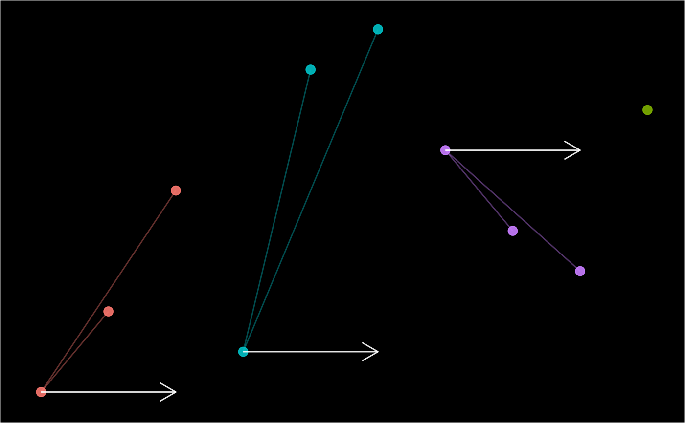
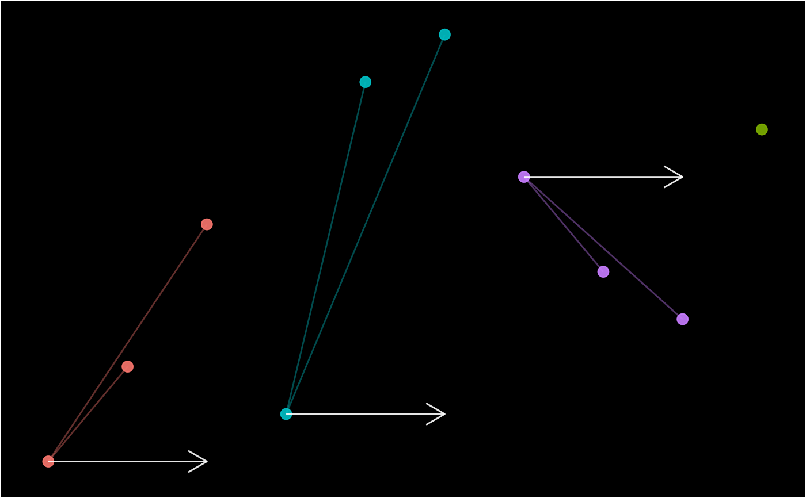

Create schema diagrams for number_line, epid, pid and pane objects.
schema(x, ...)
# S3 method for number_line
schema(x, show_labels = c("date", "case_overlap_methods"), ...)
# S3 method for epid
schema(
x,
title = NULL,
show_labels = c("length_arrow"),
show_skipped = TRUE,
show_non_finite = FALSE,
theme = "dark",
seed = NULL,
custom_label = NULL,
...
)
# S3 method for pane
schema(
x,
title = NULL,
show_labels = c("window_label"),
theme = "dark",
seed = NULL,
custom_label = NULL,
...
)
# S3 method for pid
schema(
x,
title = NULL,
show_labels = TRUE,
theme = "dark",
orientation = "by_pid",
seed = NULL,
custom_label = NULL,
...
)Arguments
- x
- ...
Other arguments.
- show_labels
[logical|character]. Show/hide certain parts of the schema. SeeDetails.- title
[character]. Plot title.- show_skipped
[logical]. Show/hide"Skipped"records.- show_non_finite
[logical]. Show/hide records with non-finitedatevalues.- theme
[character]. Options are"dark"or"light".- seed
[integer]. Seeset.seed. Used to get a consistent arrangement of items in the plot.- custom_label
[character]. Custom label for each record of the identifier.- orientation
[character]. Show each record of apidobject within its group id ("by_pid") or itspid_cri("by_pid_cri")
Value
ggplot objects
Details
A visual aid to describe the data linkage (links), episode tracking (episodes) or partitioning process (partitions).
show_labels options (multi-select)
schema.epid - TRUE, FALSE, "sn", "epid", "date", "case_nm", "wind_nm", "length", "length_arrow", "case_overlap_methods" or "recurrence_overlap_methods"
schema.pane - TRUE, FALSE, "sn", "pane", "date", "case_nm" or "window_label"
schema.pid - TRUE, FALSE, "sn" or "pid"
Examples
schema(number_line(c(1, 2), c(2, 1)))
 schema(episodes(1:10, 2))

schema(partitions(1:10, by = 2, separate = TRUE))
#> Warning: `l` and `r` have different classes. They may need to be reconciled.
schema(episodes(1:10, 2))

schema(partitions(1:10, by = 2, separate = TRUE))
#> Warning: `l` and `r` have different classes. They may need to be reconciled.
 schema(links(list(c(1, 1, NA, NA), c(NA, 1, 1, NA))))
schema(links(list(c(1, 1, NA, NA), c(NA, 1, 1, NA))))